Step-by-step typical installation instruction#
This document shows a step-by-step instruction of a typical Lifeblood installation using Lifeblood Manager
Assuming you are on Windows - download
lifeblood-manager.exefrom the latest release here. You do not need other files from there.- Put
lifeblood-manager.exeinto an empty folder you want lifeblood to be installed It’s recommended NOT to use
<home>/lifeblood, as this is the place where lifeblood configs will be stored by default.In this example I put it into
C:\users\username\Documents\lbfolder
- Put
Install/Update Lifeblood with Lifeblood Manager#
run lifeblood-manager
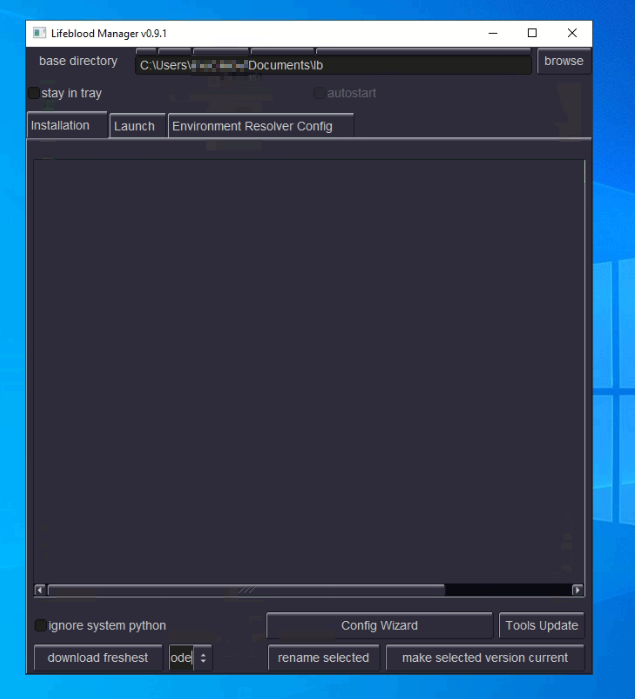
Check
Ignore system pythoncheckbox - this way a dedicated minimal python installation will be downloaded and used only for Lifeblood.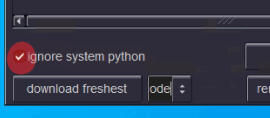
press
download freshestbutton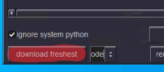
It will take some time - latest Lifeblood and Viewer will be downloaded and installed in a separate directory under base directory.
When you see something like below - you just have to wait till the process is completed. On windows this process tend to take much longer, probably due to windows defender checking every single file
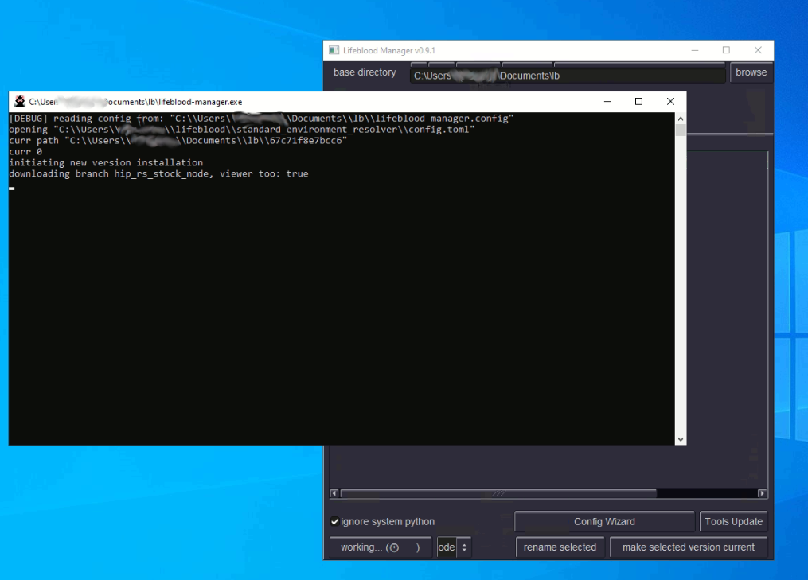
When installation finishes - the console will disappear, the interface will become responsive again, and you will see the new installed version in the list of versions, something like this:
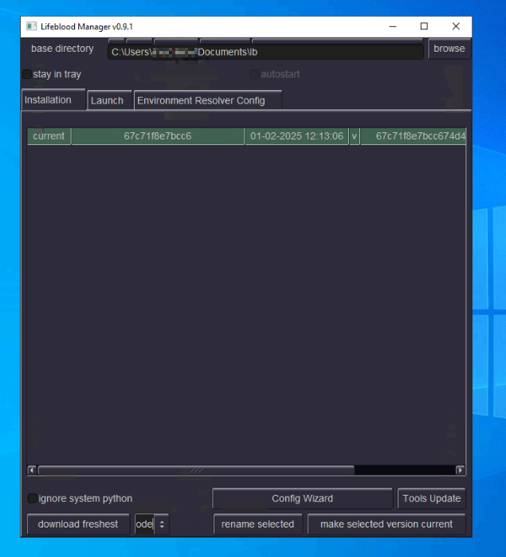
Configuration with the Wizard#
If it is your first time using Lifeblood - a setup Wizard will popup automatically.
Alternatively you can start the Wizard with this button
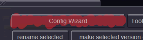
The Wizard welcoming you with an intro screen. This screen contains some links, including a link to a telegram group chat where you can get help on anything related to Lifeblood.
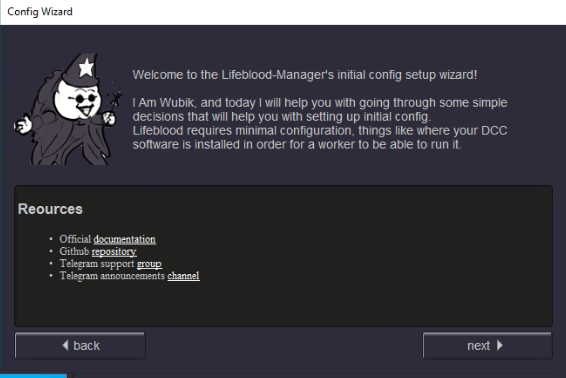
The Wizard will guide you through some basic configuration steps. Let’s for example assume we are going to setup Houdini and Redshift.
First, if you are going to use multiple computers for render - you should set up a common network location accessible to all workers. If you are not sure - do not worry, you can do it later simply by re-running config Wizard.
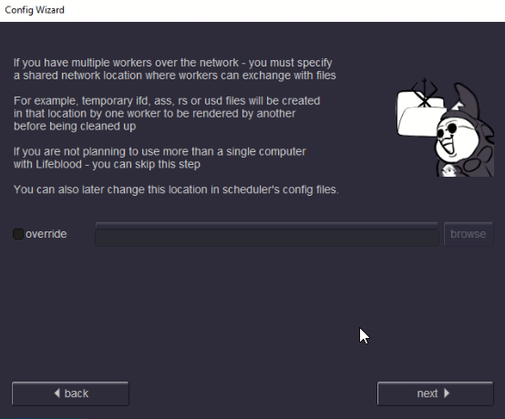
Check
HoudiniandRedshiftin the list of DCCs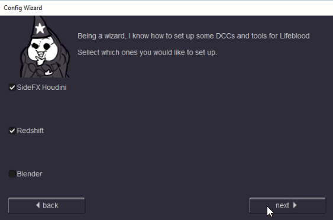
You may have multiple houdini versions installed. Here we tell Lifeblood what houdini versions it may use, this is not for installing any tools.
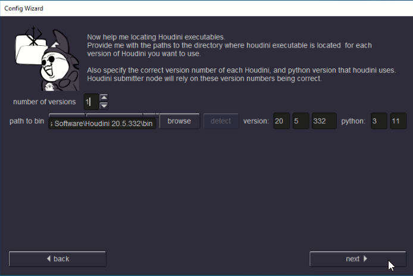
specify path to
.../bin/directory inside houdini installation locationBe sure to specify version correctly! It is very important, so better double check
If you make a mistake - you will be able to correct it later by re-running this Wizard
This window is about tools. This will copy some python modules and submission HDAs into your houdini user dirs, as you select them. Here you can specify ANY path that could be added to
HOUDINI_PATHif you want.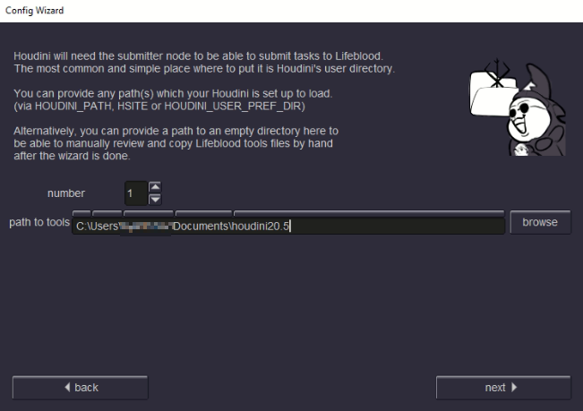
Now for Redshift - it’s very similar to houdini:
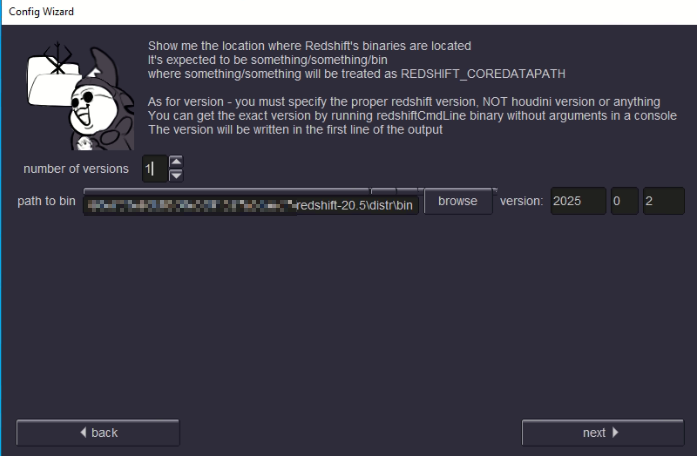
specify path to
.../bin/directory inside Redshift installation locationbe sure to specify Redshift version correctly! One way to be sure about Redshift version os to
open a cmd (Win+R)
paste the path to your Redshift bin location and add RedshiftCmdLine.exe
run it. It will not do anything, but the first line it prints will have the version information printed.
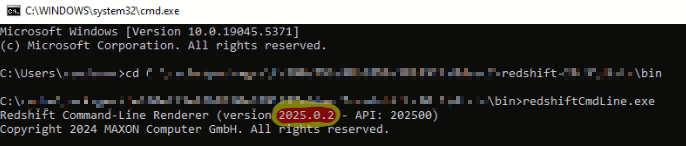
GPU tab lets you setup your GPU devices.
If you have a single GPU - just give it a name and put in information about it, such as memory, supported opencl version and cuda compute capability. You can find that information on vendor’s site, or on a database such as this one.
Do not change tags. (unless you fully understood the concept and know what you are doing)
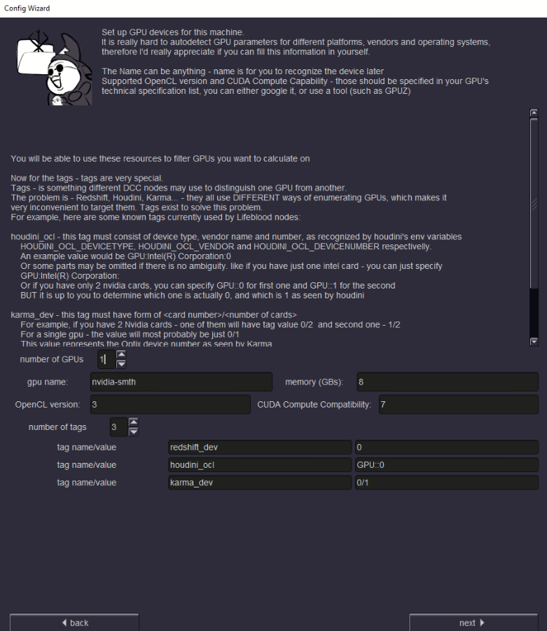
If you have multiple GPUs - setup may be complicated. For identical GPUs you might get away with the default tag values, but it is not guaranteed, as tags solve a complicated problem of different software identifying GPUs in a different manner [read more here].
As Wizard finalizes - you are ready to go!
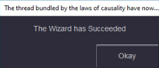
Running Components#
Now you can go to the Launch tab and run Lifeblood components. See usage section on how to use them.
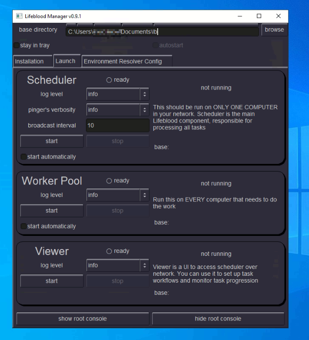
In short - it is simple:
you need to run a single instance of
Schedulerin your whole network,then you just need to run
Worker Poolon every machine that needs to do work.and
Vieweryou can run to connect to theSchedulerto set up your pipelines.
If you have a single computer (or maybe you want to start with a single one and add another one later) - you can just run Scheduler and Worker Pool
to have everything working.
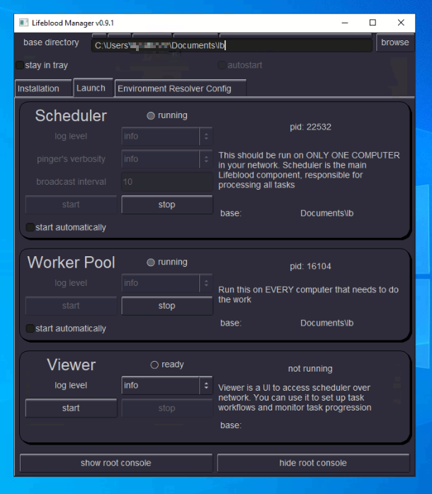
Now if you installed Houdini submission assets - you are ready to go and submit some work
Warning
if you close Lifeblood Manager without “stay to tray” checkbox set - the Manager will exit completely, and it will stop all the Lifeblood components running. So If you want to minimize Lifeblood Manager to tray - first check the “stay to tray” checkbox, then close the Manager window.
Also see Making Lifeblood components autostart with windows section
Lifeblood Node Graph creation#
Before we go into houdini - we need to create a pipeline for rendering hip files with Redshift.
Open Lifeblood Viewer
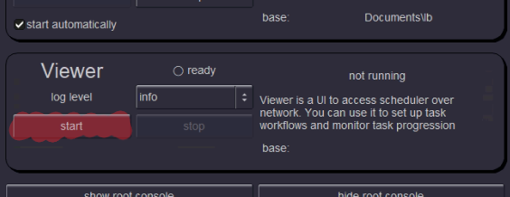
You will see the viewer window that consists of several sections. If you don’t see some sections - grab the section separator with the mouse and pull them up
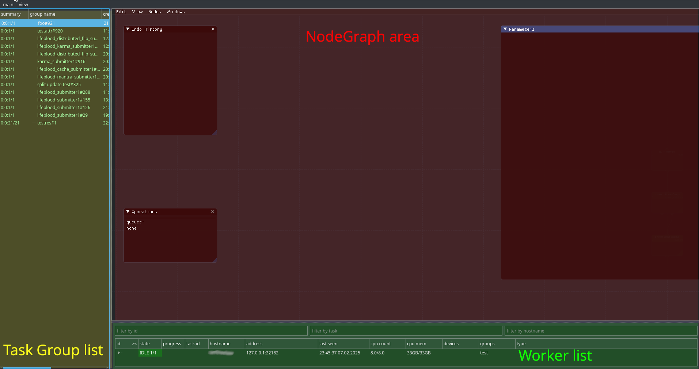
Use Tab in NodeGraph area to create nodes.
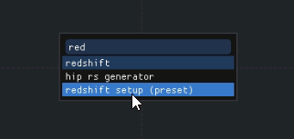
Start typing “redshift” and you will see some individual redshift related nodes, and a preset. You need the preset. Double-click on it, or select it and press enter, and the preset will be created
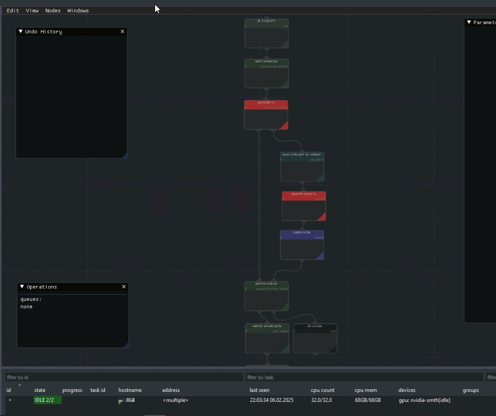
And that’s it, we are ready to submit. This preset is created to work well with default houdini submitter preset. If you look at the nodes - you will realize that everything is pretty logical: first
.rsfiles are generated in that shared network location we set up in the start of the Wizard (or locally if you missed that step). Then child tasks move to the redshift node and actually do the render using GPUs we set up in the wizard.But you do not have to understand everything just yet. Submit a short render task and see how tasks are processed by yourself.
Note
you can close the Viewer at any time - Viewer is NOT needed to process tasks. All the work is done by the Scheduler, and Viewer just connects to it.
Now that Lifeblood side setup is done - let’s go to Houdini and submit something
Submitting Redshift Render From Houdini#
Open houdini
Open a scene to render
In
/outcreate Lifeblood Redshift Submitter node, andSpecify Redshift node to render
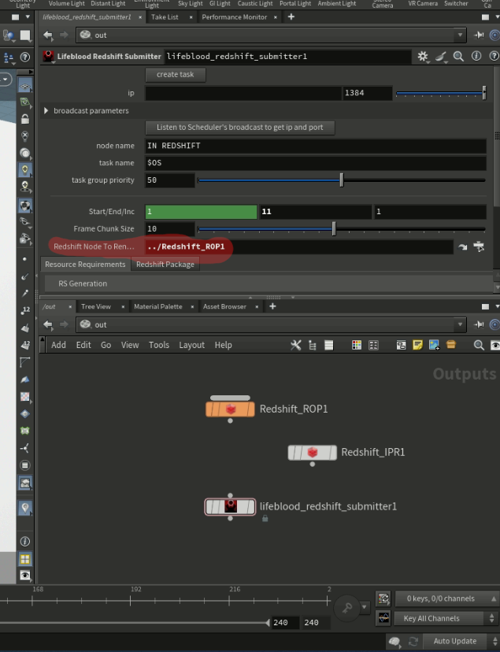
Click Create Task button on the submitter node
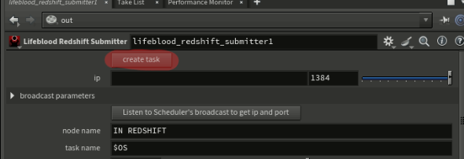
First time you click that button - it will offer you to automatically find the scheduler you want to submit to. Just click Yes and wait a bit while scheduler broadcast is being waited for.
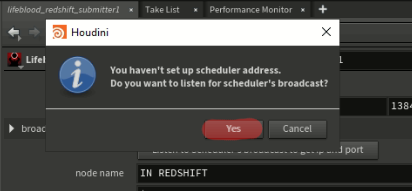
If you have unsaved changes in the scene - you will be required to save them, as the hip file will be used to render. Note, hip file is not copied anywhere by default, so if you make changes AFTER submission - those changes WILL AFFECT the rendering process, so BE CAREFUL
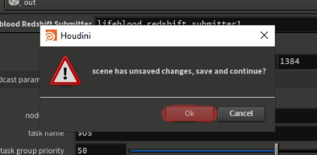
A Success popup will tell you that submission has succeeded
How does submitted task look on Lifeblood’s side#
Now take a look into the Lifeblood Viewer: to the left, in the Task Group list you will see a new group appear on the top
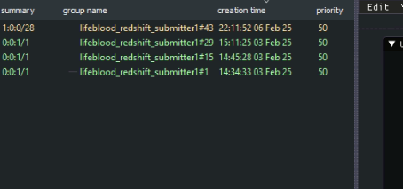
And in the NodeGraph area you will see your submitted task already spawning children and doing the work
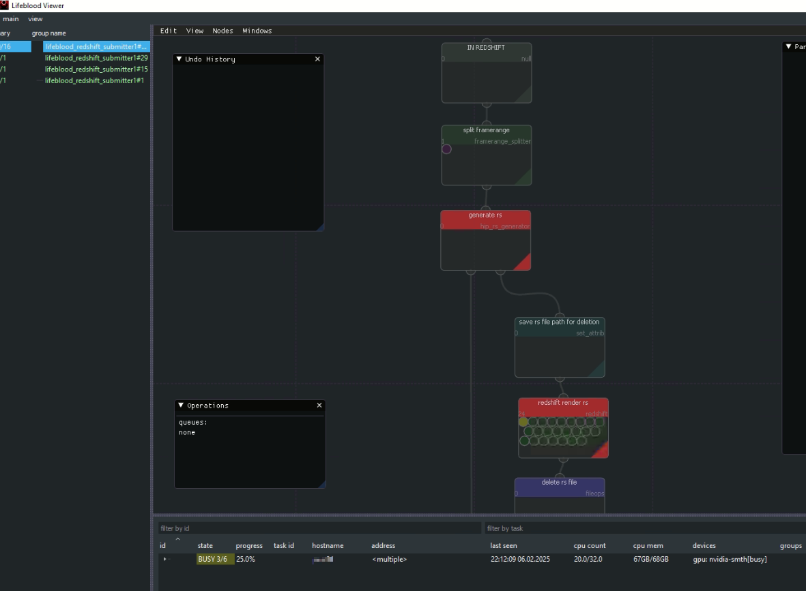
If you look down into the Workers list - you will see something like this if you expand one of the entries:
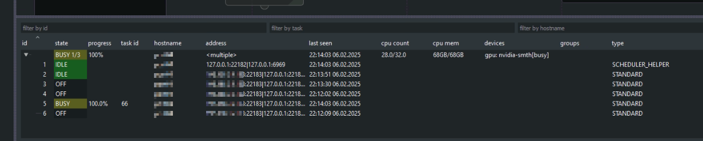
You can notice that there are several worker processes on the same computer, some are idle, some are off - this is normal.
In case of Redshift that requires GPU, and we only have a single one setup - only single Redshift render will happen at a time if we only have one computer running Worker Pool. Note that other types of tasks that do not require GPUs can run in parallel without any problems.
When rendering is done - you will see something like the following:
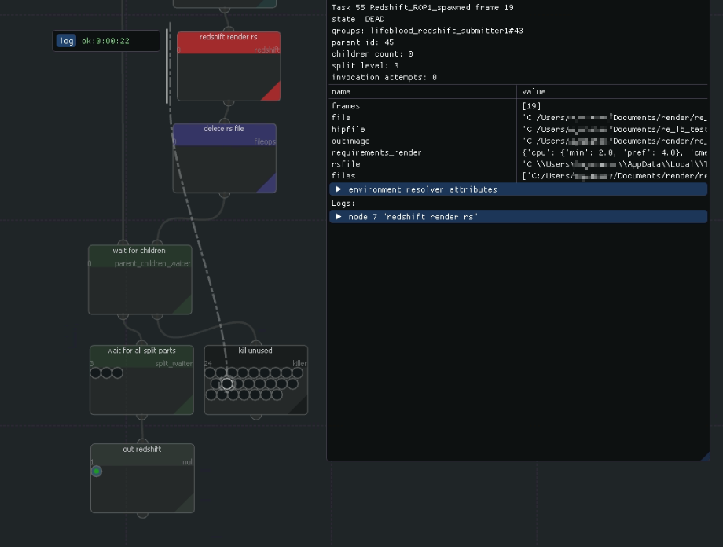
All the actual rendering tasks will be “dead” in the killer node, you can select them to view rendering logs
If you want a cleaner look of the graph instead - you can switch off a checkbox
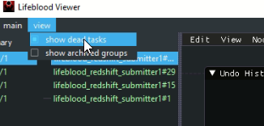
and then you will not see the dead tasks. This way is clearer for established pipelines where errors rarely occur
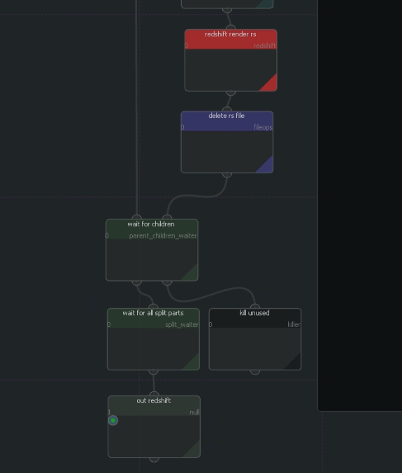
Making Lifeblood components autostart with windows#
You can toggle “minimize to tray” and “autostart” toggles on the top of the manager to have the Lifeblood Manager autostart with windows.
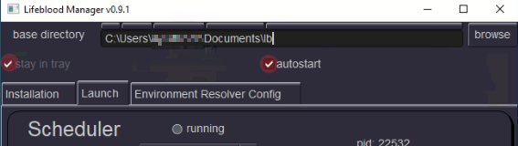
Then you can toggle “autostart” toggles for each component you want to be started together with Lifeblood Manager. With no toggles set for components - nothing will be started automatically, only the Manager itself.
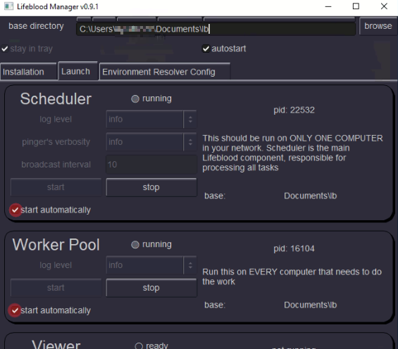
To reiterate: do NOT check autostart checkbox on every computer you install Lifeblood to, just on a SINGLE one
The tray icon will probably be hidden by windows by default, you can find it in the list
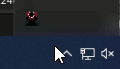
You can see component status and open the Manager window through the tray right-click menu
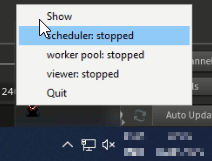